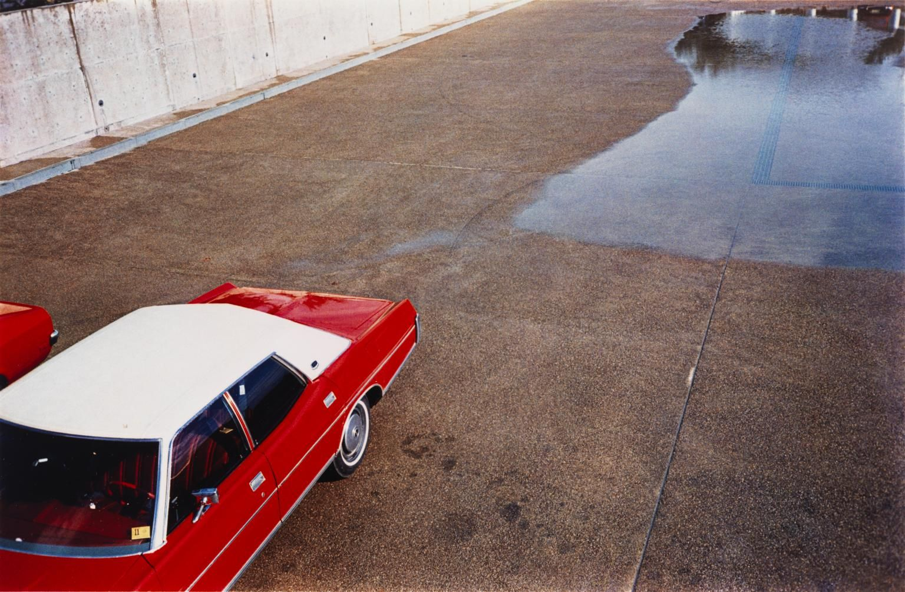
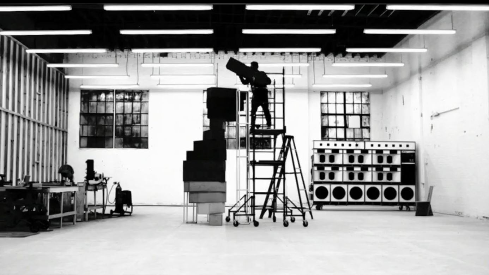

Frank Ocean Is Finally Free, Mystery Intact
Mr. Ocean is restless and more than happy to drape himself in shadows. Here, he talks about being elusive, making music and regaining control of his career.
The valet asks the question hastily, humbly, eyes not quite meeting those of the contemplative man standing before him. Frank Ocean has been staying at this secluded hotel here for a while now, long enough that when the valet spies him coming
down the front path, he knows the routine.
On this night, it’s the Tesla, the Model X S.U.V. with the gull-wing rear doors. Inside, the dash looks like the helm of a spaceship, with a center console map display bigger than an iPad that, once on the road, Mr. Ocean never consults.
It’s been more than a year since he’s had a steady home — most of his beloved cars are in storage. He moves from city to city, hotel to hotel. In a couple of days, he’ll be in New York, looking for an apartment. A day after that, he’ll turn
29.
Four years ago, he released “Channel Orange,” a clever, sinuous, supremely confident deconstruction of contemporary soul, and announced that his first love had been with a man. In the subsequent months, he was nominated for six Grammys, performed
at the ceremony and toured the world. And then, he was gone — not quite a full disappearance, but something like it. What had appeared to be the beginning of a stunning ascent instead curled into a question mark.
Finally, this past August, Mr. Ocean returned, and with a bounty — a visual album streaming online, “Endless,” followed by another digital album, “Blonde,” complemented by a glossy magazine, Boys Don’t Cry, distributed at pop-up shops in four
cities.
But apart from a lighthearted note and a couple of photos posted on his Tumblr, Mr. Ocean didn’t speak publicly. Having emerged from the ether with fanfare, Mr. Ocean returned to it quietly, his mystery intact. Not that you would be able to sense
the swirl of curiosity that surrounds him by his demeanor. During conversations over two days last month — edited excerpts are below — he was preternaturally calm, consistently forthright, reflexively self-aware, and wryly funny. This has been
the case for years. It made him something of an outlier when he emerged as part of the rabble-rousing Odd Future collective, and an outlier still when he catapulted into pop’s top ranks, a group of people not much given to pensive remove.
Over the past three years, his absence from the pop troposphere — a void interrupted only by the occasional collaboration, Tumblr post or paparazzi shot — has felt like a position statement against celebrity culture, while simultaneously
guaranteeing that Mr. Ocean’s fame, turbo-boosted by fervent curiosity, would grow even wider.
His exile began in earnest in 2013. He was living here, in a glass-walled apartment high over Sunset and Vine, with a panoramic view of South Los Angeles. But the city was choking him: People had stolen money from him; there were “physical sorts
of things going on in the streets”; and he grew concerned about the management of his affairs.
“It started to weigh on me that I was responsible for the moves that had made me successful, but I wasn’t reaping the lion’s share of the profits, and
that was problematic for me.
